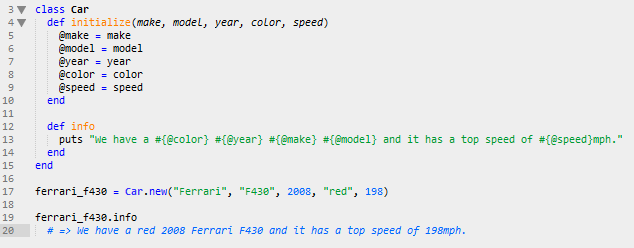

Ruby gives you the ability to make classes and objects making it one of the more powerful object-oriented programming languages. Creating a class is very helpful since Ruby will never have all the kind of objects that we want! Classes are an instance of the class Class and you can easily create them by using this syntax:
class Name
# => describe behavior
end
You can create your own methods for a specific class too which is very beneficial. Personally, I love cars... so lets make a car class!

In the code above I created two methods initialize and info these methods can only be used if an object is apart of the Car class we defined. Within the method initialize I assigned a few "instance variabels". These variables can be used and referenced in any method I create within the car class. I comfirm this by writing the method info and setting it to print a script (puts) that accesses the instance variables created in the initialize method. If instance variables are not defined then other methods in the same class cannot retrieve the information from previous methods.
Well it looks like that should be a good jumpstart for you! I hope you enjoyed the article and if you have any questions please dont hesitate to -->EMAIL ME<--.